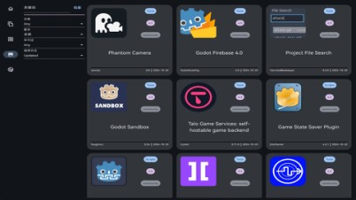
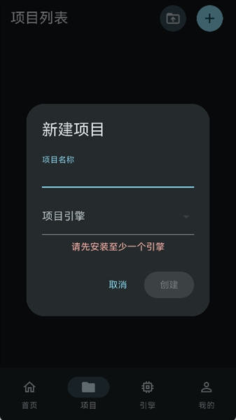

GodotHub 全景盘点：把 Godot 引擎生态握在一个小匣子里
从镜像加速、版本管理到移动端离线体验，GodotHub 能为 Godot 开发者省下哪些麻烦，又有哪些局限需要认清。
如果你是 Godot 的常客，大概率经历过这种崩溃时刻：项目里跑着 4.2.2 写的脚本，某天手抖点开了 4.5 beta，API 改了一堆、节点层级变了，编辑器满屏飘红不说，project.godot 还被新版悄悄改了格式——再回到 4.2.2 里打开，旧版本也不认了。
又或者，你在 Windows 上装了三个 Godot 版本对应三个项目，mac mini 上还有一套，C# 版和 GDScript 版的导出模板各自散落，每次换项目都得翻半天找正确的可执行文件。更别提中国大陆开发者最痛的那个环节：Godot 官方下载源在海外，两三百 MB 的编辑器+导出模板，高峰时段能给你跑到几 KB/s。
这就是 GodotHub 存在的理由。它不是一个新的编辑器，也不是插件市场——它是 Godot 开发者的「基础设施匣子」，在GodotHub官网上能看到完整的能力版图：把引擎版本管理、国内镜像、项目绑定、插件发现、社区内容几个分散的痛点收进一个工具里。

一、下载加速：把几十 KB/s 变成跑满带宽
先从最痛的地方说起。如果你还没装过 GodotHub，可以从官方下载获取。它默认内置了国内高速镜像，覆盖编辑器二进制、各平台导出模板（包括 C# / .NET 版本）、插件资源和社区模板。日常下载直接用默认镜像就行，同一资源的速度通常能跑满自家宽带。
镜像源的切换是即时生效的，不需要重启 GodotHub，正在下载的任务还能续传。GodotHub 支持断点续传——这一点在大文件下载被打断时特别值钱。
镜像覆盖不到的情况也要心里有数：第三方仓库里的插件（比如作者自己在 GitHub 发的 release），如果没被镜像收录，下载还是会走 GitHub 的源。某些冷门的旧版本，默认镜像里可能没有，这时候需要手动切备用镜像或者官方源。
GodotHub 的设计哲学里有一条叫「完全可选」——镜像加速是锦上添花的东西，你觉得不合适随时可以切回官方源，没有任何强制绑定。
二、引擎版本管理：每个项目都有自己的「安全启动键」
GodotHub 最核心的能力是引擎版本管理，而且做得比想象中细。
自动匹配：项目不会再被错误的引擎打开
GodotHub 在项目首次导入时就记下了「这个项目用哪个引擎版本」，精确到小版本号（比如 4.2.2-stable），连特殊启动参数也可以一并记录。之后从 GodotHub 双击项目，它会自动走一遍流程：检查绑定版本是否已安装 → 用对应的 Godot 可执行文件打开 → 如果没装就提示你先装。
这套绑定机制完全是 GodotHub 自己管的，不写入 Godot 引擎本身的配置文件。好处是灵活性：同一个项目目录，你想绕过 GodotHub 直接用某个 Godot 可执行文件打开也完全没问题，绑定信息只在 GodotHub 里生效，随时可以删除或改绑，不会污染项目文件。
自定义编译引擎也能纳入统一管理
高级玩家的场景：你自己编译了 Godot 源码，开启了特定编译选项、嵌入了自研 C++ 模块、或者直接跑某个 PR 的实验性分支。这些编译产物通常被丢在零散目录里，找起来特别麻烦。
GodotHub 支持把自定义引擎纳进来，具体接入步骤在GodotHub文档里有详细说明：指定可执行文件路径、起个识别性的名字（比如 4.6-custom-vulkan-optimized），它会自动扫描二进制、识别版本号和支持的平台。接入之后，自定义引擎和官方版本在 GodotHub 里享有同等地位——可以绑定项目、可以快速启动、可以参与版本切换。
不过这里有两个坑要注意：自定义引擎的导出模板需要自己编译或手动对齐版本，GodotHub 不会自动帮你配；另外 GodotHub 也无法校验自定义二进制的安全性，来源不明的东西别往里塞。
三、Android 移动端：离线也能当半个查阅器
GodotHub 还有 Android 版本，定位和桌面端不完全一样——它更像一个随身查阅器。
移动端支持一定程度的离线使用：已加载的教程页面和代码片段、已浏览过的插件列表、社区帖子内容都会缓存在本地，没网的时候可以继续翻。联网才能做的事主要是引擎版本检查、插件下载标记同步、社区发帖回复这些动作。
桌面端和移动端之间的同步是「手动标记、各端各取」的轻量模式：你在手机上刷插件库时标记了几个感兴趣的，回到桌面端打开 GodotHub 就能看到「已在移动端标记」的插件，点一下直接下载；反过来桌面端标记的引擎版本更新，手机下次联网时会收到通知。这套机制的设计取舍是「不依赖账号体系」——降低隐私顾虑，但也意味着没有实时同步。

四、短板也要说：它不是万能的，几个场景绕不过去
盘点得客观。GodotHub 解决了不少痛点，但也有一些明确的局限：
- 自定义引擎的导出模板不会自动对齐：自己编译了引擎之后，导出模板还是得自己搞定，GodotHub 不负责这一块。
- 没有多设备实时同步：桌面端和 Android 端的互通靠手动标记，没有云端账号体系，换设备用体验会断一截。
- 镜像覆盖有限：第三方插件作者自己发布的 release，镜像不一定能收录，下载还是得走 GitHub 原源。
- 版本信息不自动感知源码仓库更新：自定义编译的引擎升级之后，GodotHub 不会帮你追踪，得自己手动重新指定路径。
这些局限不是设计缺陷，而是产品定位取舍的结果——GodotHub 坚持「完全可选」「轻量化」，意味着它不做账号体系、不做深度集成，自然也放弃了一些自动化能力。
五、什么样的人该用 GodotHub
盘点完能力面，最后画个用户画像。GodotHub 不是给所有人用的，但下面几类人用了会明显感觉到效率提升：
正在学 Godot 的新手。刚上手时最容易乱装引擎版本、把项目搞坏。GodotHub 的项目-引擎自动匹配可以帮你从第一天起就养成正确的版本管理习惯，省掉很多莫名其妙的错误排查时间。而且默认镜像解决了下载速度的问题，刚上路就不用被几十 KB/s 磨掉耐心。
同时维护多个 Godot 项目的独立开发者。每个项目绑定不同的引擎版本，从 GodotHub 一键打开，再也不用记哪个项目该用哪个编辑器。如果你还在玩自定义编译引擎，这条线的价值会更大——零散的编译产物终于有了统一的归档和调用入口。
在国内网络环境下工作的 Godot 开发者。这点不用多说，官方下载源的速度问题是真实痛点。GodotHub 的国内镜像在日常引擎、导出模板下载上确实能省出大量等待时间。
反过来说，如果你只有一个 Godot 项目、只用官方 stable 版本、而且网络环境好，GodotHub 的价值就没那么大——直接用 Godot 编辑器自带的项目管理就够了。工具是给有痛点的人准备的，没有痛点时强行引入只会增加复杂度。维护者把 GodotHub 的能力说明和使用细节同步放在了GitHub、Gitee和GitCode三个仓库，国内网络环境下优先访问 Gitee 体验更好。